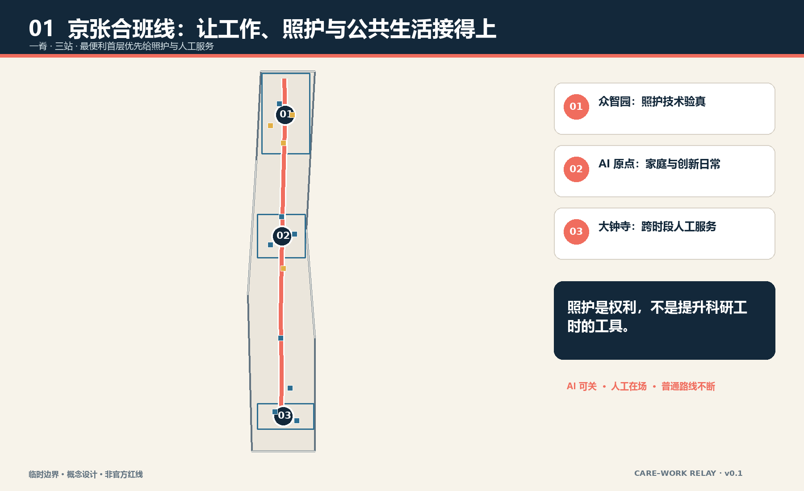

01 Zhongzhiyuan
照护技术受控验真；合成数据、成人自愿测试、人工接管。
照护是城市权利，不是提升科研工时的工具。
临时边界：不是官方红线；官方 polygon 到位后整包重算。

照护技术受控验真；合成数据、成人自愿测试、人工接管。
家庭与创新日常；亲子共学、照护者休息、基础医疗导航和开放研发并置。
跨时段人工服务；夜航灯显示普通路线、值守时段与恢复信息。
交通慢行 · 蓝绿公共空间: 同一接力脊派生遮荫绿带、公共界面、三条横街与轨道接驳深化接口。
早班交接
照护者休息
接送高峰
夜间人工服务
时刻仅为运营原型，不是已确定安排；断电、断网或 AI 退出时，照明、求助、纸面、电话与人工柜台继续。
人工复核；保留无 AI 等价路径。
人工复核；保留无 AI 等价路径。
人工复核；保留无 AI 等价路径。
人工复核；保留无 AI 等价路径。
人工复核；保留无 AI 等价路径。
人工复核；保留无 AI 等价路径。
人工复核；保留无 AI 等价路径。
人工复核；保留无 AI 等价路径。
人工复核；保留无 AI 等价路径。
人工复核；保留无 AI 等价路径。
人工复核；保留无 AI 等价路径。
人工复核；保留无 AI 等价路径。
确定性校验、空间复核、视觉包装和专业证据四道门须全部通过。临时边界限制仍是公开警示，不冒充官方精度。
sources.json → assumptions.json → geometry/*.geojson → metrics.json → figures/PDF/HTML → self_check.json